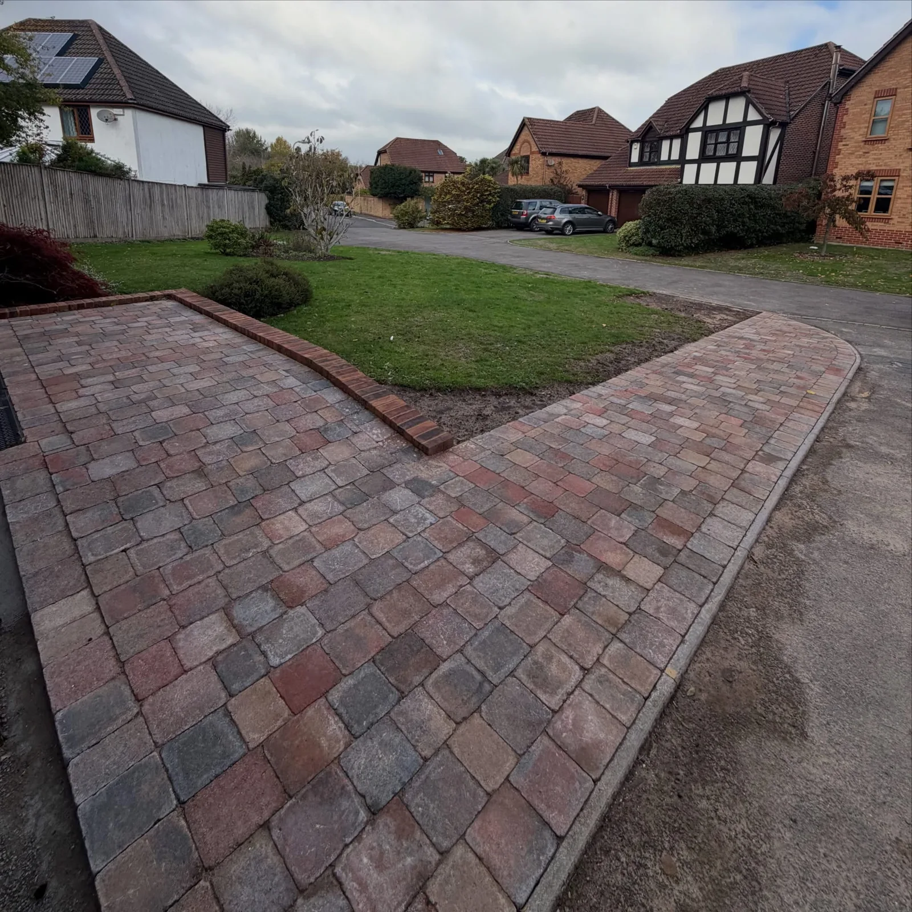
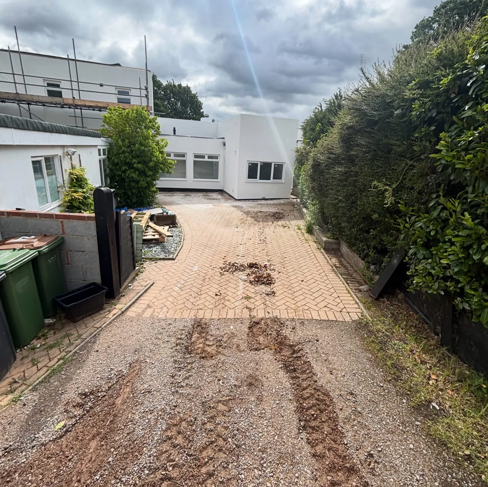
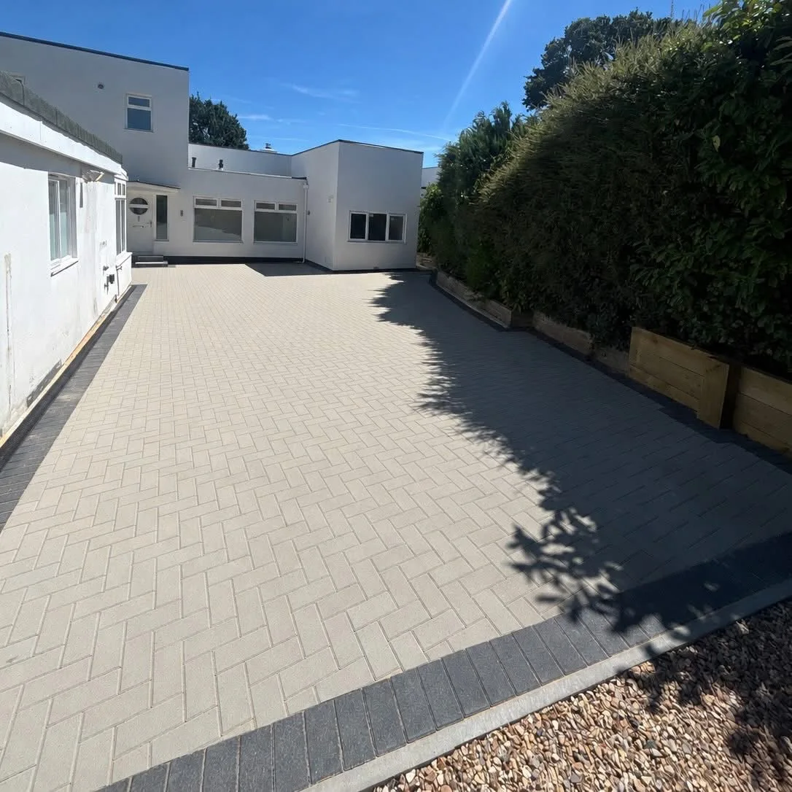
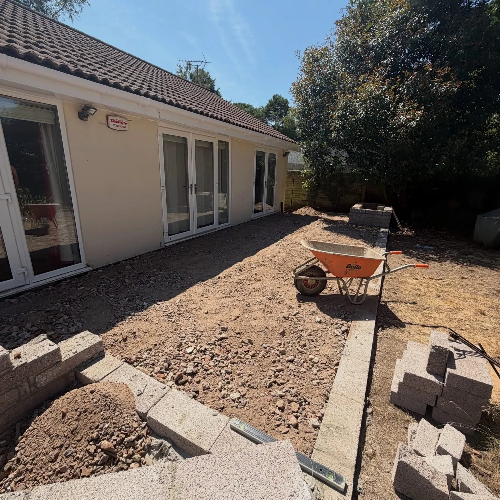
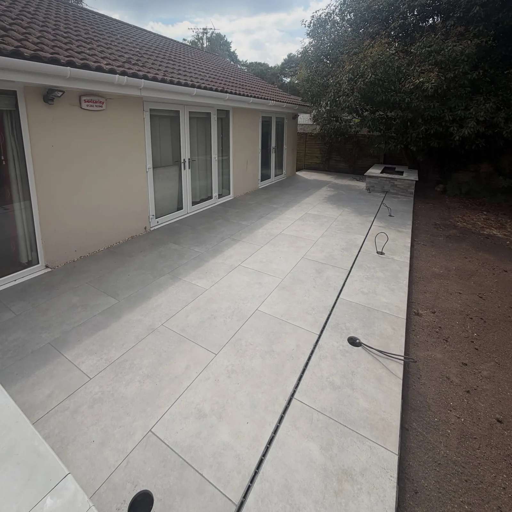

CALLARD CONSTRUCTION · HAMPSHIRE
See the work.
Explore the paving, driveways, gardens and commercial surfacing shown here.
BEFORE & AFTER
A new surface for an existing entrance.
The old driveway made way for light herringbone paving with a contrasting border.


BEFORE & AFTER
From prepared ground to finished paving.
The bungalow patio during ground preparation and after the large-format slabs went down.


THE PROJECT GALLERY
The Callard project gallery
Select a photograph to view it at a larger size.